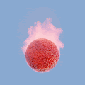
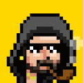
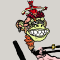

Mizuki Daydreams 由 AI 生成并被困在以太坊区块链上的 888 个灵魂。你会想出如何释放我们的灵魂来揭示我们的真实形态吗？ Mizuki Daydreams NFT - 常见问题（FAQ） ▶ 什么是水木白日梦？ Mizuki
MoonTurtlez.wtf ▶ 什么是 Moonturtlez？ Moonturtlez 是一个 NFT（不可替代令牌）集合。存储在区块链上的数字艺术品集合。 ▶ 有多少个 Moonturtlez 代币？ 总共有 8,888 个 Moonturtlez NFT。目
MoonWalkers - EDITION SPECIAL 世界著名的 3D 艺术家，在主要平台上拥有超过 10 万粉丝，Liam Pannier 被广泛认为是其艺术形式的领先专家。他专注于杰出的太空艺术品，每件在世界各地的售价
Moonwolf.io X Mark Cuban X Polygon Moonwolf 是 Matic / Polygon 上的第一个通缩代币。每笔交易都会减少和重新分配总供应量。质押许多代币以获得更多奖励，赚取MOON代币并在每个月用它来换取我们商店中
Moosehead Union Moosehead Union 是以太坊区块链上算法和随机生成的 NFT 的集合。在超过 500 万亿（5 个有 17 个零）可能的 Mooseheads 中，只有 10,000 个独特的 Mooseheads！Moosehead
More Than Degen 创建于 3 个月前 5,000 代币供应 0% 费用 刷新 过去 7 天没有超过 Degen 的销量。 Th3y 称我们为 degens，但我们是 m0re！我们是 shcollectors 和 trad3rs。我们 shlove Web3 和 p
Morie MFers Morie MFers 统计 创建于 6 个月前 1,590 代币供应 5% 费用 过去 7 天没有出售 Morie MFers。 6,969 名 Morie MFers 的灵感来自（不隶属于）Sartoshi 和 CryptoMories
Morpheu5 Series Morpheu5 系列 NFT - 常见问题（FAQ） ▶ 什么是 Morpheu5 系列？ Morpheu5 系列是一个 NFT（非同质代币）集合。存储在区块链上的数字艺术品集合。 ▶ Morpheu5 系列代币有多少？ 总共有
Morphys Morphys 是 10k 个独特的 1920 年代卡通人物，可以在链上改变他们的外观和特征。当新赛季开始时，所有者可以决定他的 Morphy 是否会变形为新的赛季外观。变形改变了它的外
Mr. Spencer Spencer NFT 先生 - 常见问题（FAQ） ▶ 什么是斯宾塞先生？ Spencer 先生是一个 NFT（不可替代代币）集合。存储在区块链上的数字艺术品集合。 ▶ 斯宾塞先生代币有多
MRST Mining PET Cube 挖掘 PET NFT 我们很高兴介绍我们的第二个 NFT 项目 The Mars。 MRST Mining Pets NFT 旨在为 MRST Mining App 中的采矿活动提供更高的生产力。 它是世界上第一个用于加密挖掘应用的实用
MrStick MrStick NFT - 常见问题（FAQ） ▶ 什么是 MrStick？ MrStick 是一个 NFT（非同质代币）集合。存储在区块链上的数字艺术品集合。 ▶ 有多少个 MrStick 代币？ 总共有 2,014
MSC Antidote MSC Antidote NFT - 常见问题（FAQ） ▶ 什么是 MSC 解毒剂？ MSC Antidote 是一个 NFT（不可替代令牌）集合。存储在区块链上的数字艺术品集合。 ▶ 有多少个 MSC Antidote 代币？ 总共有
MSCMetaverse VR Ticket 活出元宇宙的自由MSC元界；它是一个由 3D 交互模型组成的虚拟世界，配备了许多艺术品、历史建筑、科学展览、教育工作坊、旅游景点和游乐园。获取 Ticket-NFT 免
msft on Sound.xyz 关于 Sound.xyz 统计信息的 msft 创建于 5 个月前 25代币供应 10% 费用 过去 7 天内在 Sound.xyz 上没有任何 msft 销售。 由 msft 在 Sound 上创建。对这首歌发表评论 所有收藏者都可以访问我的 Discord
MSFTS MSFTS 统计数据 创建于大约 1 年前 16 代币供应 5% 费用 过去 7 天内没有出售任何 MSFTS。 Arq 的佣金和定制件,▶ 什么是 MSFTS？ MSFTS 是一个 NFT（不可替代令
MTE crazy alien Crazy Alien NFT 是 5000 Crazy Alien 的衍生集合。这些疯狂的外星人生活在 Web3.0 元界世界。每一个 Crazy Alien NFT 都是独一无二的，是未来加入 Universe Game 的关键。 Crazy Alien 是 MTE 中仅有的提供广泛实用程
Muffin Mafia 认识松饼黑手党 我们的菜单包含一组独特的 10,000 个 Muffin Mafia NFT，新鲜出炉并在 OpenSea 上推出。 当你拥有它的 NFT 时，咬一口松饼黑手党。所有权包括您的 NFT 的商业权利以
Muki NFT Muki NFT 统计 创建于 3 个月前 6,666 代币供应 10% 费用 过去 7 天内没有出售 Muki NFT。 Muki 是生活在以太坊区块链上的 6666 个多样化、美丽和独特的 NFT 的集合。 每个钱包免费领
Multicoin Capital Multicoin Capital 是一家以论文为导向的投资公司，投资于重塑万亿美元市场的加密货币、代币和区块链公司。我们管理着对冲基金和风险基金，在公共和私人市场进行投资
MultiNode 什么是多链资本？ Multi-Chain Capital 为 DeFi 用户提供了一种从 Yield Farming 收益中受益的简单方式。通过在桥接、农业和投资方面进行繁重的工作，MCC 将第 1 层和第 2 层链（Fan
Multiverse Travelers Official 6,666 个动漫艺术头像的集合，基于多元宇宙的独特故事，由被称为多元宇宙旅行者的超自然生物启用。 该项目专注于构建一个社交网络应用程序，允许用户使用拥
MunchiesNFT Collection 5,000 种流行艺术菜肴的独特收藏 以 70 位传奇艺术家为灵感的实用工具。 在纽约时代广场和萨奇艺术画廊的其他艺术博览会上展出。MunchiesNFT 将传统
Murakami Mfers V2 前 3500 免费！ 之后每个 0.0069 20 个交易限制 murakami mfers 完全由 Murakami King 的手绘生成。该项目属于公共领域；随意使用 murakami mfers 以任何你想要的方式。▶ 什么是村上 Mfers V2？ Murakami Mfers V2 是一
Murakami.Flowers Official Murakami.Flowers 是艺术家村上隆的代表作品——花卉，以点状艺术的形式表现出来，让人想起 1970 年代创作的日本电视游戏。 该作品正在以数字108为关键词进行开发； 10
Murakami.Flowers Seed Murakami.Flowers 官方 NFT 在过去 7 天内售出 113 次。Murakami.Flowers Official 的总销售额为 $414.15k。一个 Murakami.Flowers 官方 NFT 的平均价格为 3.7 万美元。Muraka
 MUSHROHMS: Descendants 蘑菇菌释放了它们的孢子！ Mushrohms: Descendants 是 Mushrohms 系列的最新成员，由普罗米修斯和哈迪斯孢子滴诞生。 普罗米修斯孢子滴在奥林匹斯山上释放了炽热的洞察力，而冥王孢子
Mushrooms Clube Mushrooms Club 是一个以社区为重点的衍生 NFT 集合，包含 9,999 个稀有 Nft。 每个 NFT 都是使用 140 多种属性（如帽子、眼睛、皮肤等等）的组合通过算法生成的！ Mushrooms Club 在以太坊
Music Bear Awards | MBA 音乐熊奖 | 工商管理硕士统计 创建于 5 个月前 387代币供应 10% 费用 没有音乐熊奖 | MBA 在过去 7 天内售出。 Music Bear Awards (MBA) 是一个社区驱动的 Web 3.0 和 NFT 平台，它将通过
 MuskyPunks 麝香朋克统计 创建于大约 1 年前 1,235 代币供应 10% 费用 过去 7 天没有售出MuskyPunks。 MuskyPunks 是 10,000 个通过程序生成的生物的集合，它们利用通货紧缩机制和版
 Mutant Apes Mfers Mutant Apes Mfers 统计数据 创建于 6 个月前 1,289 代币供应 0% 费用 过去 7 天没有出售 Mutant Apes Mfer。 让我们去变种猿mfers！！！ 💥💥0.001 ETH 💥💥 50 nfts 10 美元的汽油
Mutant Shiba Club Mutant Shiba Club 是 10,000 个动画 NFT 的集合。每个 NFT 都是独一无二的，并且驻留在以太坊区块链上。您的 Mutant Shiba Club NFT 将成为您的俱乐部会员资格。 变种人芝俱乐部 | MSC NFT 在过去 7
MvR Limited Bonus Drops (LBD) 这些是限量版奖励掉落物品不要错过，加入我们的火星人大战乡下人 NFT 之旅！加入我们的 Discord https://discord.gg/martiansvs 过去 7 天内未售出任何 MvR 限定红利滴 (LBD)。 MvR Limited Bonus Drops (LBD) NFT -
Owlies from the 5th Dimension 第五维度多元宇宙 第五维度元宇宙 - 将包含许多不同的社区或世界。每个世界都致力于不同的艺术和娱乐领域。将有美术、音乐、漫画书、电影等的世界——甚
OwlTown.WTF ▶ 什么是 OwlTown.WTF？ OwlTown.WTF 是一个 NFT（Non-fungible token）集合。存储在区块链上的数字艺术品集合。 ▶ 存在多少 OwlTown.WTF 代币？
oxMoonbirds 0xMoonbirds 统计 创建于 4 个月前 5,529 代币供应 5% 费用 过去 7 天没有售出 0xMoonbirds。 5555 月鸟扩展包。前 1000 颗薄荷糖是免费的。我们的过程：解构>重构
P F P A R A S I T E S PFPARASITES 统计 创建于 4 个月前 9 代币供应 10% 费用 过去 7 天没有售出 PFPARASITES。 闪烁的图像 感染游戏。 按下播放按钮以显示寄生虫造成的损害。 为我参与
P3nks (Halloween Party) P3nks (Drop 1) 统计 创建于 10 个月前 2,500 代币供应 8% 费用 过去 7 天没有售出 P3nk（Drop 1）。 P3nks (Drop 1) 是 2,500 个手工制作和生成的 NFT 的集合，这些 NFT 在万圣节期间悄悄


 是一个旨在提高人们对朝鲜持续导弹威胁和挑衅的认识的项目。基本上，这个项目是关于预测朝鲜将发射的导弹数量。")


 是 2,500 个手工制作和生成的 NFT 的集合，这些 NFT 在万圣节期间悄悄免费掉落。")